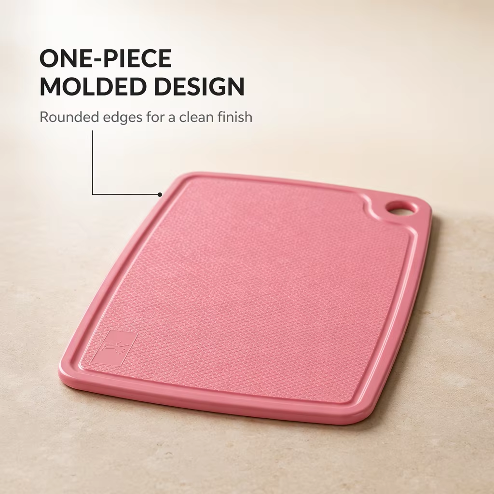
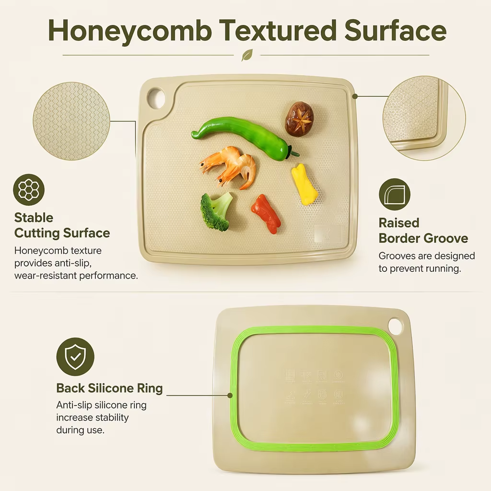

Anti-Slip Silicone Dots Chopping Board
Stable anti-slip base · four corner silicone bars
A rice husk board with four short, curved anti-slip silicone bars at the back corners. The bars hold the board steady on the worktop without sticking to it, and sit at the corners so the centre of the board stays clear. Available in natural colour or matched to your Pantone shade.
| Material | Rice husk fibre + food-grade starch binder |
|---|---|
| Grip Type | Four curved anti-slip silicone bars at the back corners |
| Sizes | 460 × 340 × 8.5 mm | 400 × 280 × 8.5 mm | 300 × 230 × 8.5 mm |
| Colour | Natural rice-husk colour or custom Pantone matching |
| MOQ | 500 pcs per colour per size (minimum 2 colours per order) |
| Certification | SGS-tested food-contact material; LFGB / REACH statements available |
Why Buyers Choose This Board
- ✓Four short curved anti-slip silicone bars at the back corners
- ✓Stops the board slipping without sticking to the tabletop
- ✓Back antiskid silicone bars keep contact points clean
- ✓Available in natural colour or custom Pantone shades
- ✓SGS-tested, BPA-free rice husk body